Brand Story
那道對角切線，
那道對角切線，
是等待與破格的交界。
瓶身上的黃綠切線不是隨手一畫——綠色是茶葉靜置冷萃的耐心等待，黃色是果物在陽光下累積的甜度。兩者相遇的那條斜線，就是「靜心」與「破格」交手的瞬間：安靜等待之後，最後一刻，果香衝破茶湯，亮眼登場。
「忍」也是這個意思——不是隱忍，是忍者的沉靜與精準：什麼時候該等，什麼時候該出手，伊忍都算好了。


伊忍不靠高溫搶快，而是用耐心換一整瓶乾淨的回甘。從茶葉挑選、萃取工法到瓶身視覺，每一個細節都經得起放大檢視。

日常裡，安靜的一口清爽。
嚴選四季青茶，低溫慢萃工法，清爽回甘、無負擔。
NT$45
蜂蜜圓潤甜感疊上檸檬酸香，清爽回甘、輕鬆醒神。
NT$65
嚴選斯里蘭卡錫蘭紅茶，低溫慢萃，清爽順口、茶香純粹。
NT$45
蜜桃清香，柔和回甘，季節限定的溫柔提案。
NT$65
洛神花香帶出綜合莓果的酸甜尾韻，輕盈清新、無負擔。
NT$65
嚴選焙香烏龍冷萃，融合香濃鮮奶，茶韻回甘、口感滑順。
NT$75
果香明亮，沁爽回甘，夏季限定的氣泡提案。
NT$80
柚子清香與茉莉花香層層交疊，花香清新、回甘爽口。
NT$60
酸甜回甘，輕盈醒神——伊忍陪你走過每個需要喘口氣的片刻。

忠實還原門市看板內容，共 6 大系列、逾 30 款風味。

門市看板實景，本菜單逐字還原。
瓶身上的黃綠切線不是隨手一畫——綠色是茶葉靜置冷萃的耐心等待，黃色是果物在陽光下累積的甜度。兩者相遇的那條斜線，就是「靜心」與「破格」交手的瞬間：安靜等待之後，最後一刻，果香衝破茶湯，亮眼登場。
「忍」也是這個意思——不是隱忍，是忍者的沉靜與精準：什麼時候該等，什麼時候該出手，伊忍都算好了。
從瓶身標籤到門市周邊，同一套黃綠語言，一致延伸。

瓶身標籤，正面設計、背面誠實標示。

產品系列包裝，從冷萃茶到 700ml 分享瓶。

從吧台到街口，團隊共同穿上的那一種綠。

外帶杯與封口貼紙，隨手一瓶也講究。

品牌周邊，也是活動最好的伴手禮。
黃綠幾何拉門、外帶窗口，讓經過的人也能順路帶走一瓶乾淨的茶——不只是一間店，更是街角的小小停頓點。

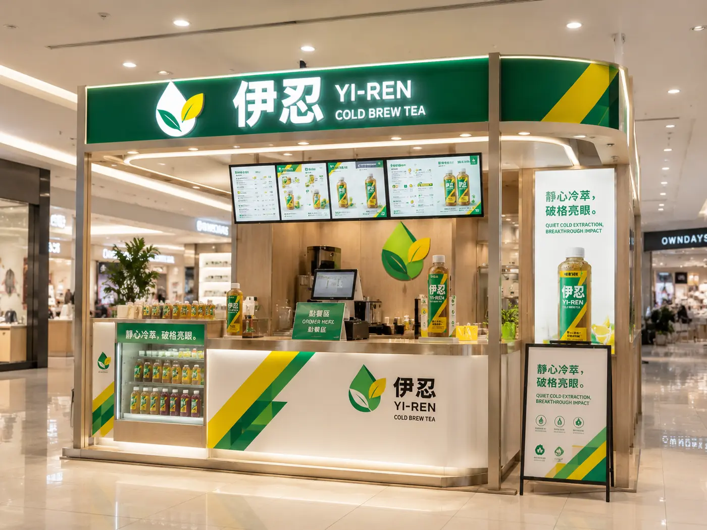
商場專櫃——0.5坪也能立起完整的品牌識別。
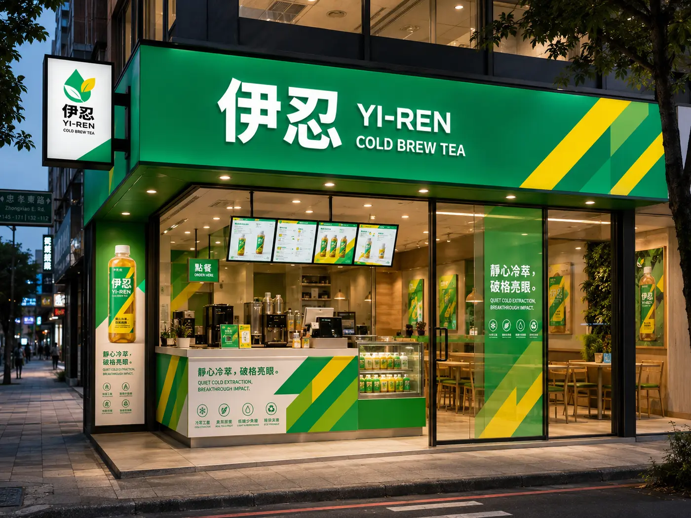
街邊轉角店，夜幕降臨後招牌依然清楚好認。
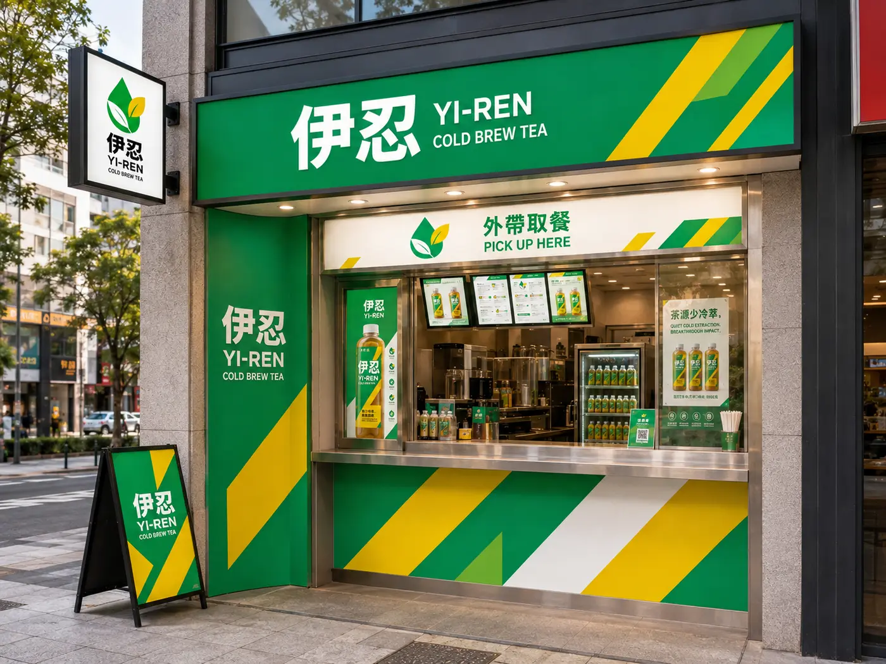
外帶取餐窗口，順路一瓶，不用特地繞進店裡。
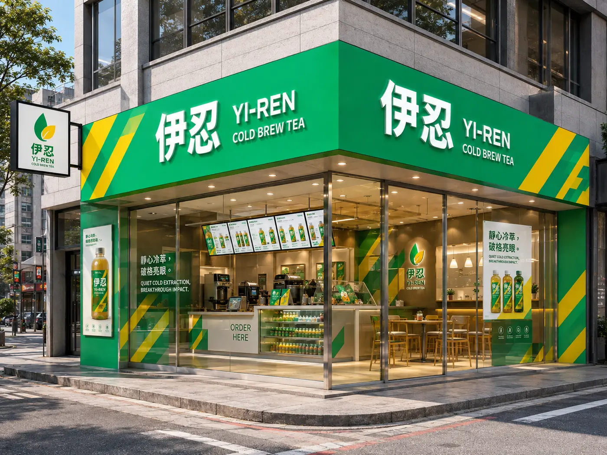
轉角雙面招牌，兩條街都看得到伊忍。
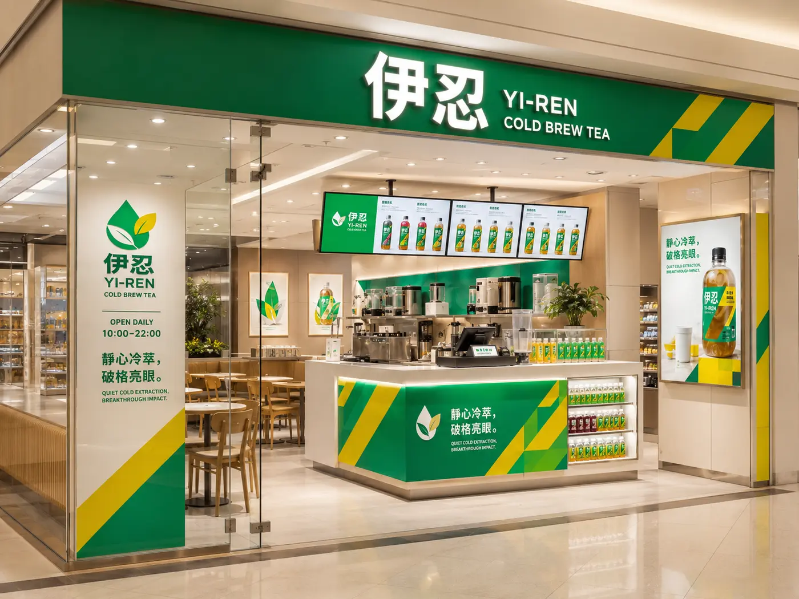
內用座位區，走累了也能坐下來，慢慢喝一瓶。
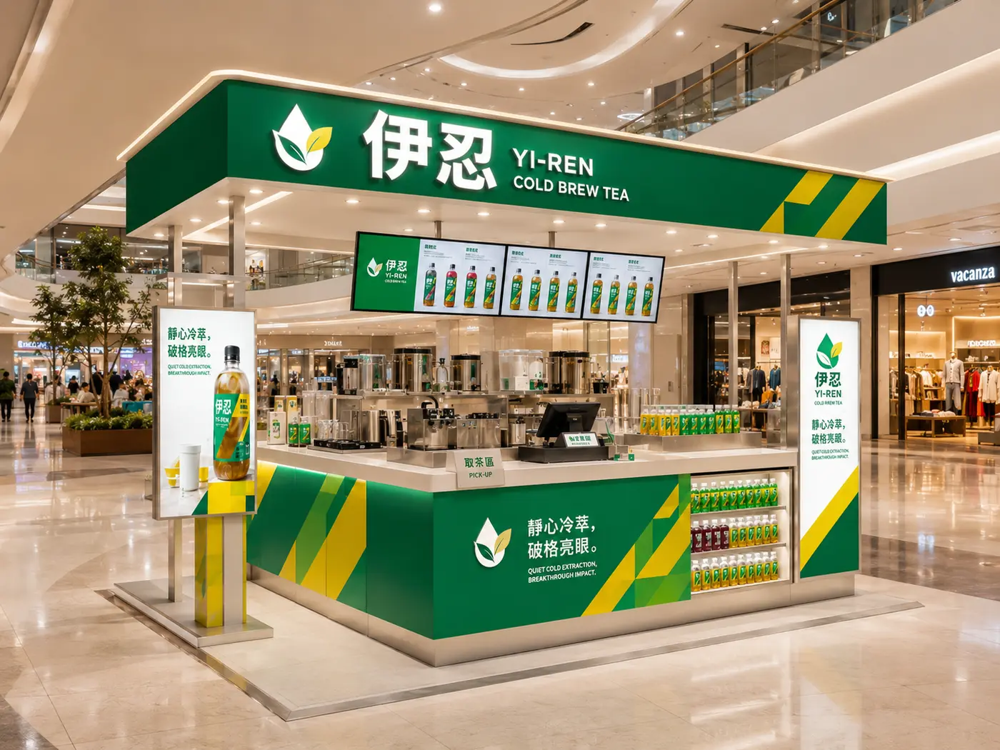
商場轉角櫃位，取茶區、點餐區動線清楚分開。
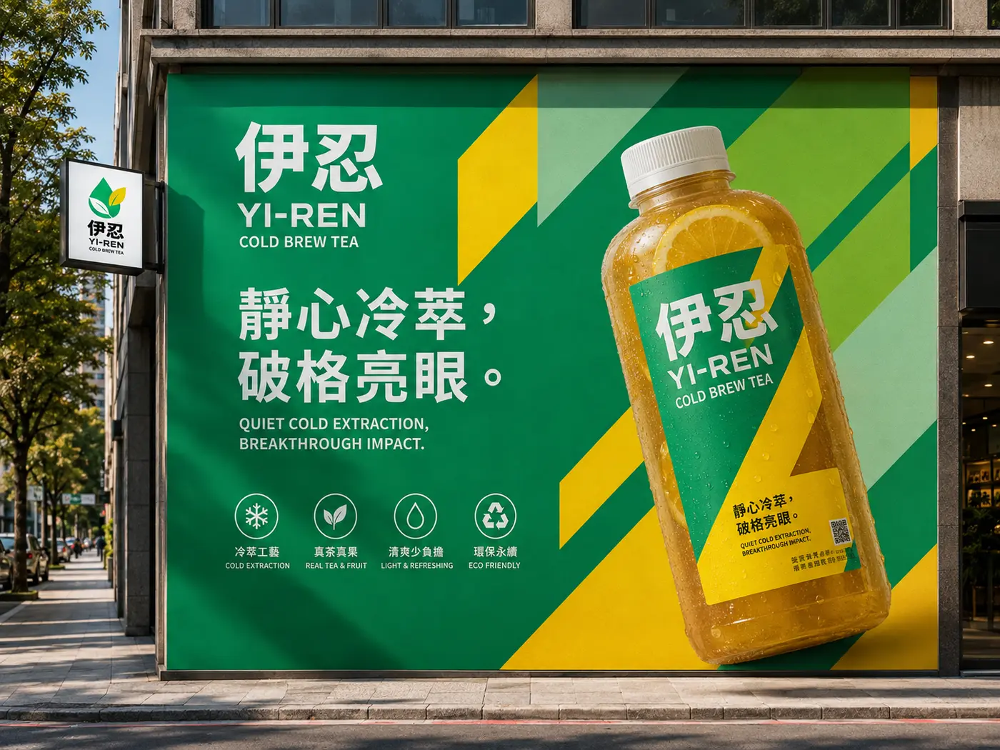
大型戶外看板，走在路上遠遠就能看到那道對角線。
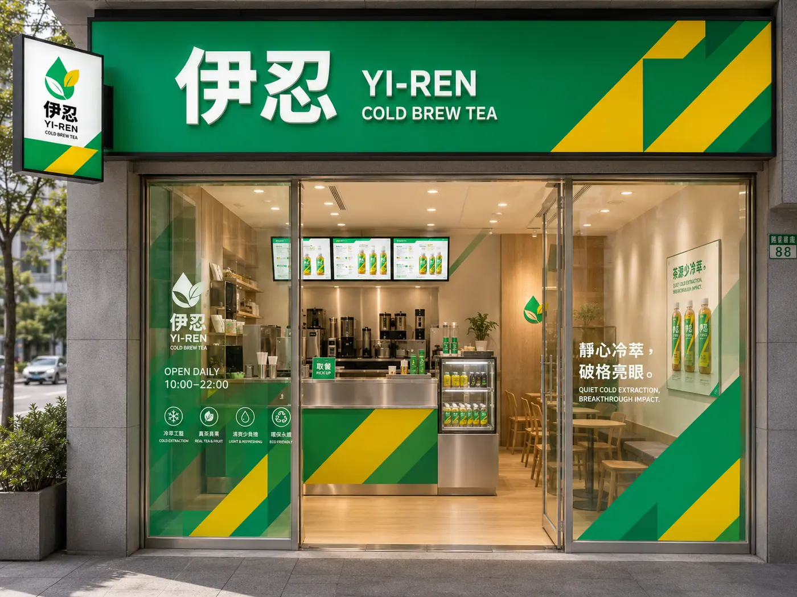
小坪數街邊店，一樣有完整的品牌識別與營業時間標示。
伊忍的品牌系統——包裝物料、SOP、官網與企業訂購服務都已建置完成。如果您認同「靜心冷萃，破格亮眼」的理念，也想在自己的城市開一間伊忍，歡迎加 LINE 好友聊聊。
以單店每日 150 杯估算，預估投資回收期約 28 個月。完整加盟流程、總部支援項目與加盟資格，都整理在加盟簡章裡。
企業會議、品牌發表、開幕活動、婚禮派對、展覽講座，伊忍提供專屬冷萃茶飲企劃。從瓶裝冷萃、冰鎮展示、特色飲品搭配，到活動限定瓶貼與品牌聯名，都能依照活動人數與需求彈性規劃。我們把茶準備好，你只需要享受活動。
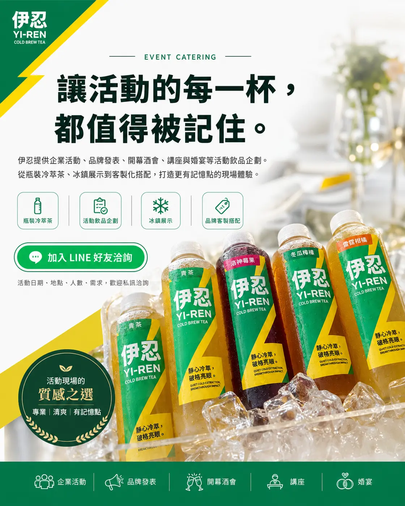
適合：公司會議、講座、記者會
內容：伊忍瓶裝冷萃茶＋冰鎮配送
適合：開幕、品牌活動、婚禮
內容：冷萃茶＋果茶＋厚奶茶，依人數搭配
適合：新品發表、VIP 活動、企業包場
內容：飲品企劃＋客製瓶貼／杯貼＋展示冰箱＋品牌陳列
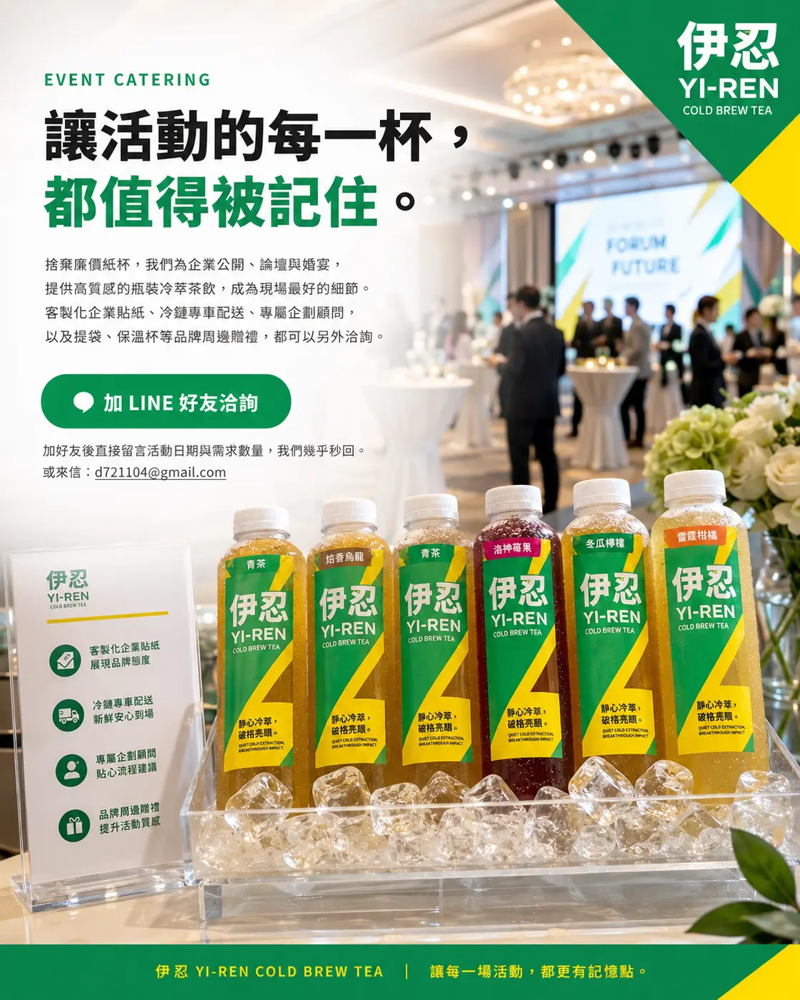
冷萃純茶可選「茉香冷萃綠、四季冷萃青、錫蘭冷萃紅、焙香冷萃烏龍、麥香冷萃」；清爽果茶可選「柚香茉莉、百香茉莉、白桃四季、青梅四季、蜂蜜檸檬紅、洛神莓果紅」；想留下記憶點，可加入「錫蘭厚奶茶、焙烏龍厚奶茶、茉莉鮮奶綠」等厚奶茶系列。
建議每場活動精選 3–5 款，畫面更漂亮，現場選擇也更簡單。
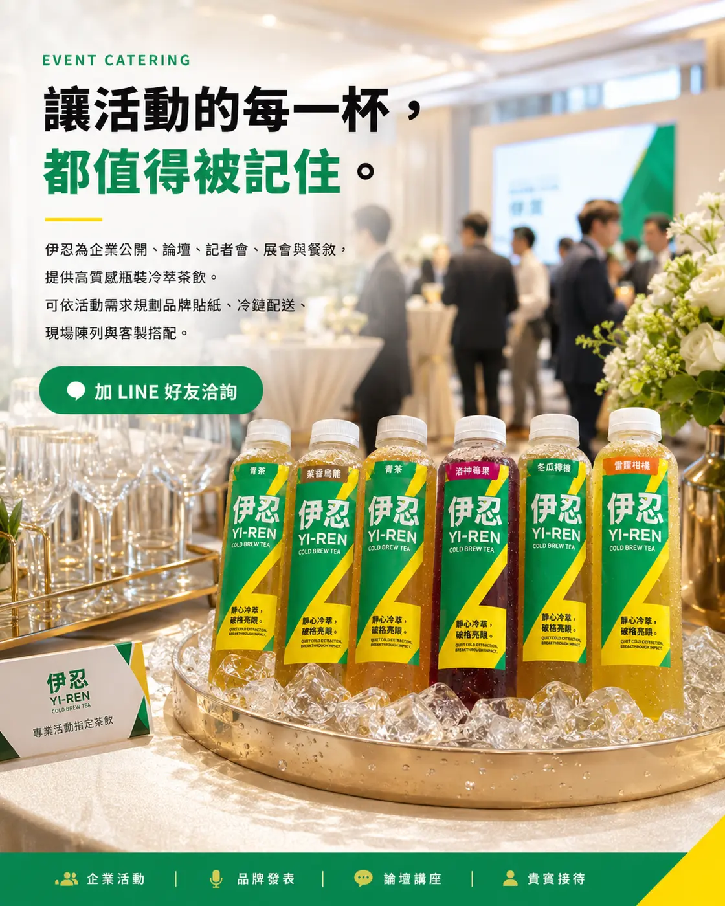
告訴我們「活動日期＋地點＋預估人數＋活動類型」，我們會依照需求提供飲品搭配建議與報價，幾乎秒回。
或來信：d721104@gmail.com
企業活動 × 品牌聯名 × 冰箱進駐——三條線其實是同一套 B2B 生態系。如果您的空間更適合長期擺一台伊忍發光冰箱，而不是單場活動訂購，歡迎看看我們的微型加盟方案。
看看發光冰箱計畫